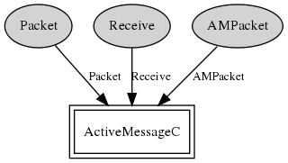

Component: tos.system.AMSnooperC
generic configuration AMSnooperC(am_id_t AMId)
The virtualization of snooping on overheard packets that are not
destined to this node.
- Author:
-
Philip Levis
- Date:
-
Jan 16 2006
- See:
-
TEP 116: Packet Protocols
Provides
Wiring
